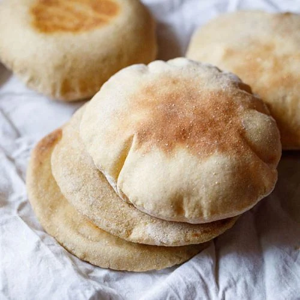

Pita Bread

Description
This is a great pita bread recipe I got from a friend who works at a great Greek restaurant here in town.
Ingredients
- 1 package active dry yeast
- 1 1/4 cups warm water (100 to 110 degrees F/40 to 45 degrees C)
- 3 1/2 cups all-purpose flour, or as needed - divided
- 1 1/2 teaspoons salt
- 1/4 cup vegetable shortening